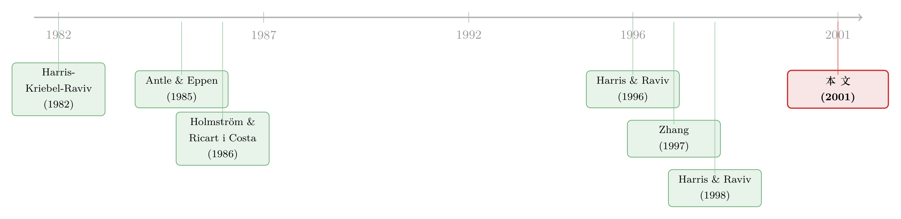

好项目反而拿不到钱：当经理「既会吹牛、又会偷懒」
本文读的是 Bernardo, Cai & Luo (2001, Journal of Financial Economics)：当总部看不清项目质量、也看不见经理努力时，最优的资本配置永远低于 NPV 法则给出的水平——而且，业绩工资之所以高，往往是因为这位经理手里的项目本来就好，不是业绩工资让公司更值钱。
1 引言：一条人人会背、却没人照做的法则
金融学的第一课，几乎都从一句话开始：算出项目未来现金流的现值，用合适的折现率折回今天，只要它超过投资成本，就该投。这就是净现值法则 (net present value rule, NPV rule)。它干净、漂亮、无可辩驳。
可现实里有一件怪事：手握闲钱、并不缺融资的公司，常常不肯把所有正 NPV 的项目都投下去。它们设的「门槛收益率」(hurdle rate) 高得离谱，远超教科书算出的资金成本——Poterba 和 Summers (1992) 调查了一批 CEO，发现的正是这个现象。明明是稳赚的项目，为什么公司宁可放着不投？
一个偷懒的回答是「融资约束」。但这篇论文偏偏假设公司不缺钱，然后告诉你：即便资金无限，最优的做法依然是少投、甚至不投。
为什么？因为 NPV 法则有一个被它自己藏起来的前提——总部得知道未来现金流是多少。而在一家分权制 (decentralized) 的公司里，知道项目好坏的，从来不是总部，而是那位天天泡在业务里的分部经理。更麻烦的是，项目能赚多少，还取决于这位经理愿不愿意卖力——而这两件事，总部既看不清、也验不了。
于是 NPV 法则就成了一句正确的废话：它假定的那个信息环境，恰恰是这家公司最缺的东西。Bernardo、Cai 和 Luo 这篇论文要做的，就是把「信息不对称」和「道德风险」这两块石头，同时压进资本预算这道题里，看看最优解会被压成什么形状。
（关于「为什么照着 NPV 选，反而选不出最高的 NPV」这个看似自相矛盾的命题，还可参见《为什么「按 NPV 选项目」反而选不出最高的 NPV？》。）
2 一个让 NPV 失灵的世界
先把舞台搭起来。一家风险中性的公司，总部 (headquarters) 替股东打理，手里有资金、也有一个投资项目；要投多少资本 k 才合适，取决于项目质量 t，而 t 总部不知道。总部能做的，是雇一位同样风险中性、却确切知道 t 的经理。
这位经理有两个「小心思」。其一，她偏爱「大盘子」——管的资本越多、项目越好，她越受用（声望、帝国构建 (empire building)、在职消费）。其二，她可以付出努力 e 来抬高现金流，但努力对她是痛苦的、且总部看不见。
项目的现金流写成：
这个形式看着普通，却埋了一个关键假设：资本与努力是互补的（αek 这一项）。多投一块钱，努力的回报就更高；多卖一分力，资本的回报也更高。后面你会看到，正是这条互补性，把「该不该给业绩工资」和「该投多少钱」死死地绑在了一起。
经理的期望效用是
$$U = E w + \beta\,\delta t k - \tfrac12\,\gamma e^2,$$
其中 w 是她的报酬，β ∈ [0,1] 衡量她对资本的偏好强度（β 落在 0 到 1 之间，意味着资本对公司比对经理更值钱），γ ≥ 0 是努力厌恶 (effort-aversion)。努力成本取 g(e) = 0.5γe²。质量 t 从区间 [0, t̄] 上按分布 F(t) 抽取，并满足机制设计里的标准假设：风险率 (hazard rate) m(t) = f(t)/(1−F(t)) 关于 t 递增（均匀分布、截断正态都满足）。
游戏的时序很直白：date 0 总部抛出一套机制——一份取决于报告 t̂ 的资本配置 k(t̂) 与一份取决于报告和结果的薪酬合同 w(t̂, V)；date 1 经理报告 t̂；之后总部按报告拨款，经理选努力、项目落地、现金流实现并分配。这里有一个不起眼却要命的假设：总部能够承诺(commit) 兑现 date 0 许下的拨款规则——否则经理一眼看穿总部事后会变卦，就再也不肯说真话了。
3 基准：信息对称时，世界本该多美好
先看一个干净的对照组：假如总部既看得见 t、也看得见 e。此时它直接写一份完备合同，最大化期望总剩余 (1+β)δtk + αek − 0.5k² + (ν−r)k − 0.5γe²，得到第一最优 (first-best)：
$$e^*(t) = \frac{\alpha\,[(1+\beta)\delta t - r + \nu]}{\gamma - \alpha^2}, \qquad k^*(t) = \frac{\gamma\,[(1+\beta)\delta t - r + \nu]}{\gamma - \alpha^2}.$$
（二阶条件要求 γ > α²，下文一直维持这个约束。）
读这两个式子，直觉全在分母 γ − α² 上：努力与资本互补，所以二者像一对齿轮，互相把对方往上抬——γ/(γ−α²) > 1 这个放大因子，正是互补性的指纹。质量越高、帝国偏好越强、努力越重要，第一最优的资本和努力就越大；资金成本和努力厌恶越高，则越小。一切都顺理成章。
注意：在第一最优里，每一个项目质量都配正的资本，连最差的项目也不例外（因为我们假设 ν ≥ r，投点钱总归划算）。记住这一点——它马上要被信息不对称撕碎。
4 当经理「既会吹牛、又会偷懒」
现在把灯关掉：总部既不知道 t，也看不见 e。
由披露原则 (Revelation Principle)，总部不妨只在「让经理说真话」的直接机制里找最优解。作者先把合同限定为对现金流线性的形式 w(t̂, V) = a(t̂) + b(t̂)V（b(·) 是利润分成，非负；a(·) 是固定工资），随后证明：在更一般的合同里，也找不到比这更好的——线性合同恰好就是最优的。
为什么不干脆把整家公司卖给同样风险中性的经理，让她自己做第一最优决策？这是一个非常自然、却被论文明确否决的念头。关键在于：经理在签约之前就已经知道了 t。 如果总部要她整体买下公司，她就有动机谎报一个低质量，好把收购价压下来。（倘若经理是签约之后才得知 t，那么签约时没有信息不对称，整体出售确实能达到第一最优——这正是本文与「只有道德风险」的标准代理模型分道扬镳之处。）
那么经理会怎么干？拿到资本 k 后，她选努力来最大化自己的效用，一阶条件是
$$b\,\alpha k = \gamma e \quad\Longrightarrow\quad e = \frac{\alpha b k}{\gamma}.$$
这一步很关键：经理的努力，完全由她手里的利润分成 b 拉动——分成是 0，她就一分力都不出。把它代回去，经理报告 t̂、真实质量为 t 时的期望效用就是
$$U(t,\hat t) = a + (b+\beta)\,\delta t k + b(\nu - r)k - \tfrac12\,b k^2 + \tfrac12\,\frac{(\alpha b k)^2}{\gamma}.$$
接着，一个自然的问题是：怎样逼她说真话？机制设计的标准结论给出了答案——要让经理不谎报，就必须给质量更高的经理留下更多的信息租金 (information rent)。沿着真实报告这条线，租金的增速恰好是
$$\frac{dU(t)}{dt} = \big(b(t)+\beta\big)\,\delta\,k(t).$$
这就是全篇的「成本中枢」：你给低质量经理的资本 k 越多、分成 b 越高，就等于抬高了所有更高质量经理的信息租金。换句话说，慷慨地对待差项目，代价不是落在差项目自己头上，而是落在它身后所有好项目的诱骗成本上。
于是总部的取舍变成了一道「逐点」优化：在质量 t 处，它要权衡多投资本、多给分成带来的真实剩余，与它推高的那一截信息租金 (b+β)δk/m(t)。风险率 m(t) 出现在分母里——这是机制设计里再熟悉不过的「虚拟剩余」结构。
5 三个区间，与「永远投不够」
把这道逐点优化解出来，最优机制呈现出一幅极其干净的三段式图景。作者用两个门槛把质量区间切成三块：
$$\underbrace{\big[(1+\beta)\delta t - r + \nu\big]\,m(t) = \beta\delta}_{\Rightarrow\; t_1}, \qquad \underbrace{\big[(1+\beta)\delta t - r + \nu\big]\,m(t) = \delta\!\left(\frac{\gamma}{\alpha^2} + \beta\right)}_{\Rightarrow\; t_2}.$$
由风险率递增可知 t₁ ≤ t₂。三段是这样的：
低质量区 t ∈ [0, t₁)：一分钱都不投。 还记得第一最优里连最差项目都配正资本吗？现在它被彻底剥夺了。原因正是上面那条租金逻辑：给低质量项目拨款，会抬高所有高质量项目的诱骗成本，划不来。β（帝国偏好）越大，这个「零投资区」越宽——经理越贪图大盘子，总部越要狠心。
中间质量区 t ∈ [t₁, t₂)：投一点钱，但不给分成。 此时利润分成 b = 0，于是经理完全不出力。资本配置为
$$k(t) = (1+\beta)\delta t - r + \nu - \frac{\beta\delta}{m(t)}.$$
把它和（无努力情形下的）有效水平 (1+β)δt − r + ν 一比，差的正是 βδ/m(t) 这一截——这就是投资不足 (under-investment) 的精确量级。由于 m(t) 递增，这个缺口随质量上升而收窄。而「不给分成区」会在努力厌恶 γ 越大、努力影响 α 越小时变得越宽：努力越不值得诱导，总部越懒得给分成。
高质量区 t ∈ [t₂, t̄]：投更多钱，且给分成。 此时利润分成转正：
$$b(t) = 1 - \frac{\gamma\delta}{\alpha^2\,k(t)\,m(t)}.$$
k(t) 与 m(t) 越大，分成 b(t) 越高。也就是说，总部对报告了高质量的经理，给更高的业绩工资、更低的固定工资——本质上是逼她「掏现金买公司的股份」，用真金白银为自己的「高质量」背书，从而断了她虚高报告的念头。
把三段连起来，最关键的一句话浮现了：无论在哪个区间，二次最优的资本配置都严格低于第一最优。 投资不足在低质量端最严重（差项目直接归零），随着质量逼近上限 t̄ 而逐渐消失。这就解释了引言里那个谜：不缺钱的公司，为什么还要设高得反常的门槛收益率——它不是算错了账，而是在为信息租金买单。哪些公司门槛最高？R&D 密集、需要高度公司专用人力资本 (firm-specific human capital)、总部与经理之间信息不对称最严重的公司。
一个有意思的对照：Harris 和 Raviv (1996, 1998) 用「审计技术」而非薪酬合同提供激励，结果同时得到了投资不足与投资过度两种区域。本文却只得到投资不足。作者在第 4 节明确指出：这种差异，根源就在于对方把薪酬合同当成了外生给定，而本文让薪酬内生地参与了资本配置。
（这种「老板一旦插手、下属就开始虚报预算」的张力，在《保留否决权的代价》里也有过另一种讲法；而「经理为什么贪图大盘子」的帝国构建动机，则可上溯到 Jensen 的自由现金流理论，见《现金为什么一定要「还」出去？》。）
6 工资条里的「反向因果」
如果说前面是这篇论文的「骨架」，那么它最锋利的一处刀刃，藏在对实证研究的一句警告里。
经验文献里有一条流行的叙事：业绩工资越高，公司随后表现越好，所以「把经理的钱和股价绑在一起」能创造价值。本文却给出了一个让人脊背发凉的另一种解释。
在这个模型里，业绩工资（分成 b）确实有两副面孔。一方面，更高的分成诱导更多努力，努力抬高公司价值——这是「业绩工资 → 价值」的因果。但另一方面，更高的分成必须给到高质量项目的经理，才能阻止她虚报。后一条说的是：经理拿到更高的业绩工资，是因为她管的项目本来就好，而不是业绩工资让公司变得更值钱。
换句话说，业绩工资与后续业绩之间那条看似因果的正相关，很可能是质量这个共同因子制造出来的「假因果」。任何想从「薪酬—业绩」相关性里读出因果的实证研究，都必须先把薪酬在内部资本配置中扮演的这个角色剥离干净——否则就是把反向因果当成了正向因果。
这正是「把资本预算和工资条捆成同一道题」之后，才看得见的暗线。（相邻主题可参见《好项目，凭什么自己说了算？》。）
7 文献脉络
这条研究线，是「分部经理握有私人信息、又偏爱资本」这一母题不断生长的结果。
最早，Harris、Kriebel 和 Raviv (1982) 以及 Antle 和 Eppen (1985) 用转移定价 (transfer prices) 来配置资本，发现既有投资不足、也有投资过度，但都没把薪酬合同请进来缓解经理与总部的偏好分歧。Holmstrom 和 Ricart i Costa (1986) 换了个角度：经理（和市场）通过投资结果学习她的能力，于是产生「为护住人力资本价值而扭曲投资」的冲突，结果同样是过度与不足并存。

接着，Harris 和 Raviv (1996) 把资本预算过程模型化为一场「概率审计」的博弈，1998 年又推广到多分部公司——这是与本文最贴近的工作，同样假设各方风险中性、经理握有私人信息，但激励靠的是审计技术、薪酬外生。Zhang (1997) 则反过来，让握有无限资本的经理有动机低报质量来掩盖偷懒，「自愿的资本配给」反而能逼出努力。Milbourn 和 Thakor (1996) 离本文最近——同时有信息不对称、道德风险与内生薪酬——但他们只设两种项目类型，合同恰好实现第一最优，因此没有投资不足。
本文 (2001) 的位置由此清晰：它第一次把连续型的信息不对称、道德风险、内生的线性薪酬合同与「偏爱资本」的经理偏好同时塞进一个能显式求解的模型，并从中长出一串关于薪酬构成的横截面预测。它在方法上还借了机制设计的家底——Holmstrom 和 Milgrom (1987) 关于最优合同线性性的结论，以及 Laffont 与 Tirole (1986) 一脉的监管/采购框架。
评论与延伸（Q&A + 研究方向）
(a) 几个可能的疑问
Q：既然大家都风险中性、又有无限责任，为什么不直接把公司卖给经理，一了百了？
因为经理是在签约前就知道了项目质量
t。若让她整体买下公司，她会谎报低质量来压低收购价，信息不对称在签约时就已经存在。只有当经理是签约之后才得知t（此时签约时无信息不对称），整体出售才能达到第一最优。这正是本文与「只有道德风险」的标准模型最本质的分野。
Q：「永远投资不足」是不是模型设定硬塞出来的结果？
不全是。投资不足来自一条很一般的机制设计逻辑：给低质量项目拨款会抬高高质量项目的信息租金。但「只有不足、没有过度」这一点确实依赖于薪酬内生。作者自己点明：Harris-Raviv 因为把薪酬外生化，才会同时出现过度与不足——所以这是一个可以被检验、而非纯属假设的命题。
Q：为什么中间质量区「投了钱却不给分成」，听起来很浪费？
因为给分成的唯一目的，是诱导互补性努力
αek；而给分成又会抬高信息租金。在中间区，项目质量还不够高，诱导努力带来的剩余抵不过它推高的租金成本，于是总部选择「投点资本、但放弃努力」。只有当质量越过t₂、努力的边际价值足够大时，给分成才划算。
Q：模型说「报告越高质量、业绩工资越高」，可现实里高管薪酬常常一团乱，这条预测靠谱吗？
这恰恰是本文最值得实证的预测，也最容易被反向因果污染。模型的洞见在于：业绩工资与公司价值的正相关，可能是「质量」这个共同因子制造的假象，而非「薪酬→价值」的因果。所以这条预测的价值不在于「相关」，而在于提醒实证研究必须先控制项目质量与内部资本配置。
Q：经理偏爱资本（β）这个假设，是不是可有可无？
作者明说：
β不是核心结论的必要条件，但它给模型增添了丰富性，且先验上也合理（专用人力资本越强，经理越怕项目被砍）。真正不可或缺的，是资本与努力的互补性（αek）——没有它，「投多少」与「给不给分成」就不会纠缠在一起，三段式结构也就垮了。
Q：努力的噪声项 ε 和它的分布，为什么对结论毫无影响？
因为模型里所有人都风险中性。均值为零的噪声只改变现金流的方差，而风险中性的当事人只在意期望，不在意方差。这也是为什么线性合同在这里就够用——一旦引入风险厌恶，最优合同的形状会复杂得多。
(b) 几个可能的研究问题与提案
1. 把「反向因果」搬到数据里去验。 【经济故事】模型预言：业绩工资高，是因为经理管的项目质量高，而非业绩工资本身创造价值。【可行性】中。需要一个能近似「项目质量」的外生代理变量（如行业层面的需求冲击、专利质量、订单簿），用它做工具，把薪酬—业绩相关性中「质量驱动」的那部分剥出来。识别难点在于找到只影响项目质量、却不直接影响薪酬合同的变量——doable 但要靠巧妙的自然实验。
2. 把模型搬进信用市场：债权人也是「不知情的总部」。 【经济故事】经理向银行/债券投资者「报告」项目质量以争取融资额度，债权人则用利率与契约条款（而非股权分成）来甄别——这与本文结构同构。【可行性】中。可用银团贷款 (DealScan) 里的额度、利差、契约严苛度，检验「高质量借款人是否拿到更大额度＋更强业绩挂钩条款」。数据齐全，但「质量」依旧难直接观测。
3. 外资持有人作为「更不知情的总部」。
【经济故事】外资股东与本地经理之间的信息不对称通常更严重（m(t) 所刻画的甄别能力更弱），模型预测这会加剧投资不足、并改变薪酬构成。【可行性】中。可用跨国持股数据（如可投资度）与高管薪酬数据，检验「外资持股比例越高的公司，门槛收益率是否越高、业绩工资是否更依赖项目质量」。识别要小心外资持股本身的内生性。
4. 「门槛收益率为何偏高」的结构估计。
【经济故事】本文给出了门槛收益率高于资金成本的一个全新机制（信息租金），与融资约束、实物期权等解释并列。【可行性】低到中。需要从公司投资—质量数据反推 β、γ、α、m(t)，是一项结构计量工程；难在把「信息租金」这一机制与其他「高门槛」解释干净地区分开。
5. 承诺能力的实证含义。 【经济故事】模型的全部结论都依赖总部能承诺事后不变卦的拨款规则。现实中承诺能力因公司治理而异。【可行性】中。可用治理强度（董事会独立性、双层股权等）作为承诺能力的代理，检验承诺能力更弱的公司是否表现出更严重的投资扭曲与更扁平的「质量—薪酬」斜率。
我的判断
这篇论文的贡献是干净而锋利的：它把「信息不对称」与「道德风险」这两个通常分开处理的摩擦，连同内生的薪酬合同，一起塞进一个能闭式求解的资本预算模型，并从中长出三段式机制、单调的投资不足，以及那条关于薪酬「反向因果」的警告。尤其是最后一点，它不只是又一个理论结果，而是一记对实证文献的当头棒喝——这是好理论该有的样子。
但它的力量也来自它的简化，而简化正是我担心的地方。全员风险中性让线性合同唾手可得，可一旦引入风险厌恶，「逼经理掏现金买股份」的逻辑就要重写。单一项目、单期的设定回避了内部资本市场里「分部之间抢钱」的核心张力——而那恰恰是 Harris-Raviv 一脉真正想刻画的东西。最关键的是，总部能完全承诺这一假设，把动态一致性问题一笔勾销了；现实里，事后变卦的诱惑恰恰是分权制公司最难治的病。
我接下来最想看到的，是有人把那条「反向因果」真正拖到数据面前：用一个干净的、只动项目质量的外生冲击，去把薪酬—业绩相关性里「质量驱动」与「激励驱动」两股力量分开称重。如果能做到，这篇 2001 年的理论，就会从一个优雅的命题，变成一把能改写实证结论的尺子。
参考文献
- Antle, R., Eppen, G. (1985). Capital rationing and organizational slack in capital budgeting. Management Science 31, 163–174.
- Berkovitch, E., Israel, R. (1998). Why the NPV criterion does not maximize NPV. Unpublished working paper, Tel Aviv University.
- Bernardo, A. E., Cai, H., Luo, J. (2001). Capital budgeting and compensation with asymmetric information and moral hazard. Journal of Financial Economics 61(3), 311–344.
- Gertner, R. H., Scharfstein, D. S., Stein, J. C. (1994). Internal versus external capital markets. Quarterly Journal of Economics 109, 1211–1230.
- Harris, M., Kriebel, C. H., Raviv, A. (1982). Asymmetric information, incentives, and intrafirm resource allocation. Management Science 28, 604–620.
- Harris, M., Raviv, A. (1996). The capital budgeting process: incentives and information. Journal of Finance 51, 1139–1174.
- Harris, M., Raviv, A. (1998). Capital budgeting and delegation. Journal of Financial Economics 50, 259–289.
- Holmstrom, B., Milgrom, P. (1987). Aggregation and linearity in the provision of intertemporal incentives. Econometrica 55, 597–619.
- Holmstrom, B., Ricart i Costa, J. (1986). Managerial incentives and capital management. Quarterly Journal of Economics 101, 835–860.
- Laffont, J.-J., Tirole, J. (1986). Using cost observation to regulate firms. Journal of Political Economy 94, 614–641.
- Milbourn, T., Thakor, A. (1996). Intrafirm capital allocation and managerial compensation. Unpublished working paper, Indiana University.
- Poterba, J., Summers, L. (1992). Time horizons of American firms: New evidence from a survey of CEOs. Unpublished working paper, Harvard University.
- Stein, J. C. (1997). Internal capital markets and the competition for corporate resources. Journal of Finance 52, 111–133.
- Zhang, G. (1997). Moral hazard in corporate investment and the disciplinary role of voluntary capital rationing. Management Science 43, 737–750.